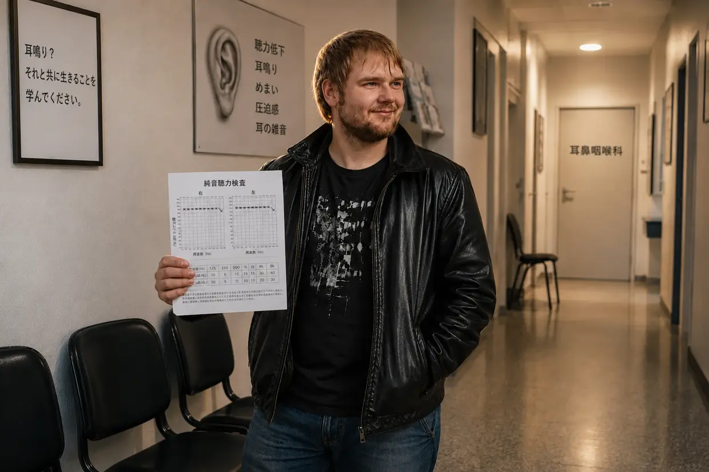

耳鳴り地獄から抜け出した私の道のり（短縮版）
こんにちは。ダスティン・ミュラーです。
もし今このページにたどり着いたのなら、おそらく当時の私と同じ地獄の中にいるのでしょう。私の回復について詳しく綴った9,000語の物語を読みたい方には、完全版の自伝があります。
早く答えと全体を貫く筋道を知りたい方へ。鉄の論理とバイオハッキングで、当時の耳鳴りを100％から0％までねじ伏せた、その過程をコンパクトにまとめます。
1. 崩壊（2011年秋）
私は23歳で、健康そのもの、自分の身体なら何でも耐えられると思っていました。フランクフルトのテクノクラブ（U60）で、ベーススピーカーの真ん前にたった一度いただけで、すべてが強制終了しました。翌朝、最初は「ただ」極度のめまいと、耳の鈍い圧迫感、そして身体が強く左へ傾く感覚で目を覚ましました。身体が勝手に何とかしてくれると思っていました。けれど3日目、本当の怪物が目を覚ましたのです。突然、左耳に地獄のような甲高い音とザーッという音が現れ、右耳にも小さなピー音がありました。私のシステムは完全に崩壊しました。
2. システムの失敗（「それと付き合って生きることを学んでください」）
パニックの中、私は耳鼻咽喉科から耳鼻咽喉科へと駆け回りました。当時返ってきた答えは、顔面を殴られたようなものでした。私の聴覚は永続的に損傷しており、「それと付き合って生きることを学ばなければならない」というのです。音楽や「ホワイトノイズ」で音を覆い隠す（マスキング／TRT）ことまで勧められ、必要なら抗うつ薬も出せると言われました。その助言に従い、さらに音楽とノイズを耳に流し続けたところ、すでに右耳にあった小さな音が数日後には明らかに悪化しました。
振り返れば、この「マスキング」は私にとって致命的な助言であり、2度目の完全なクラッシュにつながりました。医師を盲目的に信じ、「気をそらす」ため、学校へ向かう車中で大音量の音楽を聴いたのです。それが、空っぽになっていた細胞にとどめを刺す最後の一滴でした。学校では突然、猛烈な音への過敏（聴覚過敏）が始まり、視界がぐるりと回り（宙返りするような回転性めまい）、耳の中でイオンがせき止められたため、平衡器官は完全にあふれかえりました（メニエール病様症状）。私は完全に孤立し、家から出られなくなりました。
3. 転機：「幻の音」への反証
その後、ある耳鳴り専門医は、数か月たった私の耳鳴りは脳内の「幻の音」にすぎないと、私に思い込ませようとしました。偶然が、その反証を私に示しました。大学病院で急性外耳道炎の治療を受けたとき、医師が大きな音のする器具で私の耳を吸引しました。まさにその瞬間、この騒音刺激に反応して、私の耳鳴りが物理的に、その一点で爆発したのです！
私にとって、これは冷徹な論理でした。心理的な幻の音が、機械的な騒音にリアルタイムで反応するはずがない。私の耳鳴りは固定されたものではありませんでした。故障した発生源はまだ耳にあり、新たな騒音が加わるたび、細胞は助けを求めて叫んでいたのです。
4. 静寂のプロトコル

私は（効果のなかったコルチゾン治療のために）入院しており、両耳は厚いガーゼで何日も外界から完全に遮断されていました。そこで初めて、音が実際に小さくなるのを感じました。私はそこから結論を出し、「気をそらす」ようにという医師の助言をすべて無視して、ほぼ完全な静寂の中で何か月も過ごしました。音楽なし。ヘッドホンなし。生活音なし。その結果、耳鳴りは約25％下がりました（もちろん体感です。耳鳴りを定規で測るわけではありませんから）。ところが、その後は回復が完全に停滞しました。身体は行き詰まっていました。
5. B12の火花（冷徹な推論）
決定的な突破口もまた、家族の出来事から生まれました。父は神経疾患のために高用量のビタミンB12を自分に注射し、まるで花開くように元気になりました。
そのとき、分析的なひらめきが私の中で形になりました。私は15歳からベジタリアンで、そのうえ長い間、重い慢性胃炎（胃粘膜の炎症）に苦しんでいたのです。（ちなみに、この胃炎は少し前に、ミネラルクレイ、プロバイオティクス、サイリウムハスクで克服したばかりでした――医師も間違えることがあるという最初の証拠です！）肉を食べない食生活と病んだ胃の組み合わせは、重度のB12欠乏が起こる完璧な設計図でした。
この論理に突き動かされ、私も父に筋肉注射を打ってもらいました。重要：医師の管理なしにこれをまねしないよう、はっきり忠告します。翌朝、耳鳴りは大幅に小さくなっていました（約40％改善）！ 私が得た結論はこうです。B12はATP産生の主要な燃料です。私の細胞は騒音によって最後のATPまで使い切っていました。注射で細胞にエネルギーが一気に流れ込み、「細胞のエンジン」が再び始動し、その夜、私の身体は修復を進めることができました。
6. 欠けていた材料（細胞膜とミエリン）
B12を使っても、耳鳴りは一日が進むにつれて何度も悪化し、また大きくなりました。理由は？ バッテリーは充電されても、細胞の物理的な構造はまだ壊れたままだったのです。
また痛みを伴う危機（胆石疝痛）が起きたとき、偶然レシチン顆粒に出会い、それが疝痛に効きました。重要：胆石がある場合は必ず医師のサポートを受けてください。ここで述べているのは、急性の状況での私個人の体験であり、治療の助言ではありません。レシチンを初めて摂ってからわずか3日後、突然60～65％改善していました――出発点との比較です！
その背後の生物学は、私にとって魅力的でした。レシチン（リン脂質）は神経を覆う膜（ミエリン鞘）に重要なだけでなく、一つひとつの細胞膜を作る根本的な主要材料でもあります。ディスコで受けた激しい酸化性の騒音ストレスにより、酷使された聴覚細胞の細胞壁は、文字どおりもろく、透過性の高い状態になっていました。当時の私の説明モデルでは、B12がエネルギー（ATP）を、レシチンが細胞のセメントを供給し、壊れた有毛細胞を物理的に再び密閉して、聴神経にあると想定した接触不良を補修する、というものでした。
7. 「Carpet Bombing（絨毯爆撃）」（100％の勝利）
ボトルネックを完全に突破するため、私は容赦のないオーソモレキュラー医学的な「Carpet Bombing（絨毯爆撃）」を始めました。細胞修復に必要なものをすべて身体に与えたのです。
- 当時まだ弱っていた胃を迂回するための、高用量のビタミンB群（B1、B2、B3、B5、B6、B9、B12）
- レシチン30g
- アミノ酸と、最高品質のオメガ3オイル3g
- ビタミンC、ミネラル（亜鉛、マグネシウム）、微量栄養素濃縮物（LaVita、Dr. Rath）
フェードアウト：

この大量の栄養供給と静寂の厳守によって、流れは決定的に変わりました。朝の音は日ごとに小さくなり、夕方の落ち込みも短くなっていきました。そしてある朝、目を覚まし、確認のため耳栓を耳の奥まで押し込むと、そこにあったのは、絶対的で解放感に満ちた完全な無音でした。調光スイッチはゼロになっていました。
当時の私の説明モデルでは、ミエリン鞘が修復され、聴覚細胞のアクチン骨格が再び立ち上がり、脳が緊急時の増幅器を切った、ということでした。生物学が勝ったのです。
自分の手で取り組む
もし同じ暗闇の中にいるのなら、希望があることを伝えたいです。私はこのウェブサイトに、自分が見つけた生物学的なつながりと、どのバイオハッキングの手順が自分の身体を犠牲者モードから抜け出させたのかを正確に記録しています。この情報をどう使い、ご自身の身体の生物学を――理想的には医師と相談しながら――どう支えるかは、すべてご自身の手に委ねられています。私の道は、私の物語です。今度は、ご自身の物語を書く番です。
重要な注意：
ここで読んでいるのは、私個人の体験談です。身体も物語も、一人ひとり違います。

CFSへの転落とナイアシンフラッシュ
致命的な連鎖反応：CFSへの転落
最初の耳鳴りが治った後はすべて順調だった、と思うなら、それは違います。ただし、この命を脅かす転落は、耳鳴りが治ったことの「代償」ではありません。私のシステムを完全にバランス崩壊へ追い込んだ、致命的な連鎖反応でした。
私の身体は、たちの悪い生物学的パラドックスに捕まり、真っすぐ崖へ向かっていました。私は過剰な「オーバードライブ」生活で、自分をむち打って動かしていました。短期的には多くのエネルギーが出て、たくさん動けましたが、その間にも蓄えはどんどん燃え尽きていきました。それによって長期的に自分のシステムをどれほど消耗させているのか、気づいていませんでした。
向き合えていなかった背景のトラウマ、化学的なコルチゾンの後遺作用、この絶え間ない細胞の過剰刺激、そして強力な抗生物質（と胃酸抑制薬）で完全に破壊された腸。その組み合わせが、ついに私の足元を完全に崩しました。
そこへさらにエプスタイン・バーウイルス（伝染性単核球症）が加わると、私のシステムは完全に崩壊しました。診断は慢性疲労症候群（CFS）。私は1年以上、ほぼ寝たきりでした。ミトコンドリア（細胞の発電所）は、エネルギー（ATP）の産生をほぼ完全に停止しました。
6,800ユーロの袋小路と、私の最大の傲慢

絶望の中で、私は見境なく何でも買いました。米国の大手企業Life ExtensionやThorneの製品から、高価なビタミンC点滴、KPU治療、ホルモン補充療法まで。模擬高地トレーニング（IHHT）も試しましたが、パニックで中断せざるを得ず、CFS専門クリニックに入院する寸前でした。
この狂気に、その1年で、うそ偽りなく約6,800ユーロを溶かしました。結果は？ 完全なゼロ。私の身体は何ひとつ受け付けませんでした。
悲喜劇的な皮肉です。夜中に調べものをしていたとき、ドイツ企業FitLineのウェブサイトにたどり着きました。そこにいたのはきっかり4秒か5秒。見た目を見て、傲慢にもこう思いました。「流行りのスポーツドリンクに、なんだこの間抜けな名前は？ 私に必要なのは本格的な医療だ。カラフルなジュースじゃない」。そのとき、100％返金保証を完全に見落としていました。私のエゴと生半可な知識のせいで、さらに何か月もCFS地獄で過ごすことになりました。
2013年：ナイアシンフラッシュと細胞の再起動
2013年、どん底で私は98％寝たきりでした。そこへYouTubeが、驚くほど全体を見渡し、しかも確かな知識で物事を説明する自然療法士の動画をフィードに流してきました。彼がわずか30km先にいると分かると、最後の力を振り絞ってそこへ向かいました。母は、これ以上ほかの医師のところへ私を車で連れていくことを、すでにきっぱり拒んでいたからです。
彼は粉末を水に溶かしてくれました――鮮やかなオレンジ色の液体です。それは、私が少し前に傲慢にも切り捨てた、まさにあのFitLineセットでした！
6～8分後に起きたことは、まさに狂気でした。猛烈なナイアシンフラッシュが起きたのです。全身が極端に熱くなり、凄まじい血流が血管を駆け巡り、皮膚が赤くなりました。1年以上ぶりに、細胞の中に本物の物理的エネルギーを感じました。
本当の問題は、私の身体が三重のブロック状態にあったことでした。第一に、消化管は長期にわたるストレスと抗生物質で完全にバランスを崩していました（ディスバイオシス）。第二に、腸には固形カプセルを消化するための細胞エネルギー（ATP）が単純に足りませんでした。そして第三に、嫌気性の非常運転によって細胞がひどく酸性に傾き、栄養素をほとんど取り込めなくなっていました。皿は満杯なのに、細胞は飢えていました。
液体で生体利用性の高い栄養素セットが、この巨大な吸収ブロックを突如として突破しました。
私はプライドを捨て、その日から毎日、欠かさず製品を摂りました。結果は、ほとんど現実離れしていました。
- 20日後：再びごく普通に階段を上れるようになりました。
- 2か月後：寝たきり状態がなくなり、再び力強く自転車をこげるようになりました。
- 3～4か月後：身体が崩れることなく、コンピューター講座を修了しました。
- 2年弱後：身体はこれまで以上に元気になり、Rewe onlineで極端にきつい肉体労働に就いていました――自ら進んでダブルシフトまでこなしました！
人生で最も狂った実験

細胞エネルギーについて苦労して手に入れたこの知識こそ、最終的な耳鳴りマトリックスに欠けていた鍵でした。栄養ルーティンによって細胞のATPタンクが常に容量200％まで満たされるようになった今、この論理が頭から離れませんでした。最初の耳鳴りのとき、私にはほとんどエネルギーがなく、静かな部屋に半年間閉じこもらなければなりませんでした。では今、この凄まじいエネルギーを持った身体がもう一度騒音を浴びたら、何が起きるのか？ 日常生活という「走行中」にも、いわば自ら修復するのか？
⚠️ 重要な注意：この実験について書く前に、私が永続的な損傷を負っていた可能性もあったことを、はっきりさせておきます。絶対にまねしないでください。
どんな医師でも完全な狂気だと思う決断をしました。自分の身体で理論を証明するため、私は意図的に2度目の耳鳴りを引き起こしたのです。
当時、私は身を守るための慎重さを完全に捨て、激しく遊び回りました（一つには、まさにこの実験に挑もうとしていたから。もう一つには、まだとても強い生への渇望が残っていたからです――CFSからの回復は数年前のことでした）。その夜に感じたのは、一時的な警告信号（圧迫感）だけでした。ところが、それが限界までやるきっかけになりました。何週間にもわたり、大音量のヘッドホン音楽を耳に過剰に浴びせ続けました――聴くこと自体が純粋な物理的苦痛になった後でさえ。細胞の本能は叫んでいましたが、理性はその痛みを無視しました。
そして、ある晩のこと。PCの前に座り、ヘッドホンを着けました――すると、突然訪れた静寂の中で、左耳のかすかなピー音が聞こえました。音が戻ってきたのです。一方ではむき出しの恐怖、もう一方では妄想じみた魅惑。
テスト用の「怪物」をしっかり育て上げ、200％ATPの防護シールドで即座に窒息させないため、私は冷徹で、極めて危険な決断をしました。栄養補給を完全に断ち（摂取停止）、FitLineセットとレシチンを意図的にやめたのです。
崩壊、パニック、そしてその場で得た証拠
この絶え間ない挑発と防護シールドの欠如によってシステムが完全に崩壊するまで、1か月半から2か月かかりました。耳鳴りは元の音量の猛烈な75％で戻り、まったく新しい音のカオス（典型的なサイン波のピー音、奇妙なモールス信号、低いシュー音、そしてサイレン）を伴っていました。
夜ベッドに横たわると、現実が容赦なく襲ってきました。音は耳をつんざくほどで、むき出しのパニックがこみ上げました。この馬鹿げた実験で、もしかすると自分の人生を取り返しがつかないほど台なしにしてしまったのか？
しかし、形勢を逆転させる前に、文字どおりシステムを絶対的な負荷限界で試しました。
- 顎・首テスト：頭と顎を大きく動かすことで、音の種類と音量を100％変えられました！
- ノイズテスト（マスキングへの反証）：私は2～3分間、極端に大きなホワイトノイズを自分に浴びせました（まさに医師がマスキングとして勧めるものです）。ヘッドホンを外すと、数秒間は完全な無音になり、その後、耳鳴りがそれまで以上に大きく攻撃的にわめき出しました。自分の身体で得た冷徹な証拠です。ノイズは、病んだ有毛細胞に絶え間なくイオンをポンプすることを強制します。ヘッドホンを外すと、細胞のバッテリーは残らず空になり、数秒間、物理的に機能停止して「無音」になります（不応期）。わずかでもエネルギーを再充電した瞬間、緊急信号が2倍の音量で叩き返してくるのです！
- 手をたたくテスト（機械的衝撃）：耳のすぐ前で手を強く一度たたくと、その瞬間ぴったり、耳鳴りが怒ったようにわめきました。
日常生活の中での回復（「修道僧モード」なし）
翌朝、もう十分でした。実験は頂点に達していました。私は自分の回復用スタックで、元に戻る道を始めました。
- FitLineのフルセット（Activize、Restorate、Basics、Q10入りOmega-3）。
- ドラッグストアで買ったレシチン顆粒。
今回、意図的に欠けていた非常に重要なものが一つありました。苦いアミノ酸粉末は、もう摂りませんでした！ その背後にある見事なシステム生物学はこうです。最初の耳鳴りのとき、私は重い慢性胃炎に苦しみ、普通の食べ物からタンパク質を分解できませんでした。今、数年後には、腸内環境の再建によって消化機能は完璧に正常になっていました。当時の私の説明モデルでは、健康になった消化管が、ミエリン鞘に必要なアミノ酸を普通の食事から問題なく自力で取り出せる、というものでした。
最大の違いは、最初のときのように人生から自分を隔離する気がまったくなかったことです。CFSに打ち勝った後、生への渇望があまりにも大きかったのです。私は賢い妥協を選びました。極端な騒音のピークは一貫して避ける（カーラジオを最大音量にしない、ヘッドホンなし、ディスコなし）。それでも完全には引きこもりませんでした。買い物にも、移動遊園地にも、映画館にも引き続き出かけ、比較的普通に生活しました。
「えっ？！」の瞬間と完全な静寂
信じられないことが起きました。最初の数週間、すでに2週目から3週目の間に、突然気づいたのです。待てよ、音がもう反応してるじゃないか！
音ははっきり小さく、薄くなりました。まず、左耳に新しく現れたあのシュー音が残らず消え、次に、絶え間ないピー音もはっきりと薄くなりました。私は完全にあっけに取られ、こう思いました。「えっ？！ いや、すごい……普通に生活したままで、強い騒音のピークだけ避けている。それなのに、もう全体が反応しているのか？！」
回復には約3～4か月かかりました。周波数が一つずつ、体系的に消えていく過程でした。
まず右耳の音が消え、約2か月後には完全に治りました。左耳ではサイレンと低いトラックのうなりが薄れていき、最後には高周波のサイン波音（絶対的なラスボス）だけが残りました。
最初の耳鳴りのときと同じく、朝の時間帯が決定的な指標でした。つまみがゼロラインへ向かってどんどん動いていくように見えました。3か月目の終わり頃には、夕方でも音がとても小さくなり、完全に静かな部屋で耳栓をしているときか、まったく音のない浴室に座っているときにしか聞こえませんでした。
最後の詰めをするため、特殊なビタミンB12の滴剤をもう一度手に入れ、口腔粘膜からシステムに最後のひと押しを与えるため、毎日舌のすぐ下に垂らしました。
そしてその後の数週間のどこかで、完全になくなりました。消えたのです。残らず。100％。
私は人生で究極かつ最も危険なストレステストをくぐり抜けました。冷徹で絶対的な確信を、今や持っていました。騒音性耳鳴りからの回復は、偶然でも、運でも、神秘的な運命でもない。私にとって、それは、細胞が自らを修復するために必要なものを正確に与えたときに生じた、論理的で避けようのない結果でした――しかも普通の日常生活の真っただ中で。
最後に、短く正直なひと言（リアルトーク）
この病気と回復をめぐる物語全体が、外から見る人にはどう読めるのか、よく分かっています。もし自分の身体でそのすべてを体験していなければ――ばかげた「偶然」の連鎖、最初に耳鼻咽喉科医へ反発したこと、CFSへの深い転落、失敗に終わった6,800ユーロの治療、そして最後に、YouTubeのアルゴリズムがわずか30km先にいた救いとなる自然療法士を画面へ流してきた、あの狂った「マトリックスの瞬間」……私自身も、おそらく安っぽいハリウッド脚本か、でっち上げたおとぎ話として片づけたでしょう。本当だとは思えないほど、ただただ狂っています。
だからこそ、ここですべてのカードを完全にテーブルへさらします。これは作り話の回復ストーリーでも、マーケティングの仕掛けでも、まして根拠のないスピリチュアルでもありません。冷徹な、物理的・細胞レベルの真実です。この地獄と回復を示す物理的な証拠を、一つ残らず持っています。周波数帯ごとの大きな落ち込みが記録された医師のオージオグラム、検査報告書、診断書、クリニックと治療者の請求書です。
楽しませるために、これを語っているのではありません。語るのは、私がこの忌々しいシステムを解読したからです――そして、この知識が耳と夜を救えるからです。